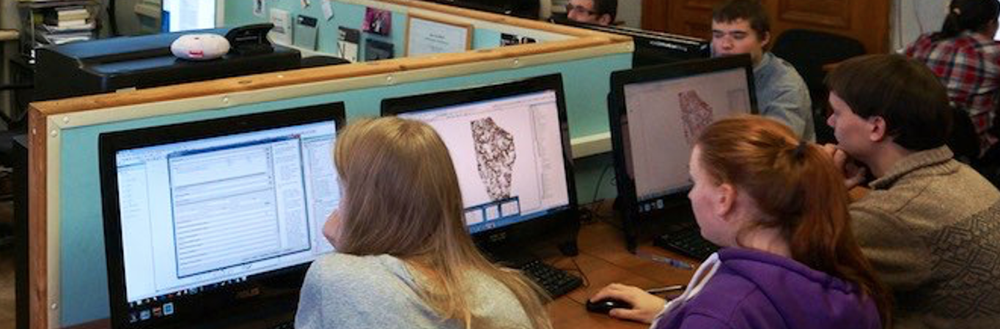
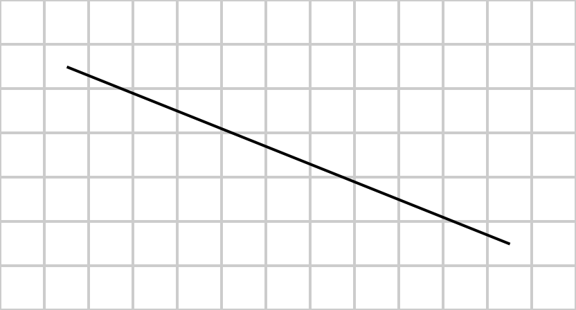
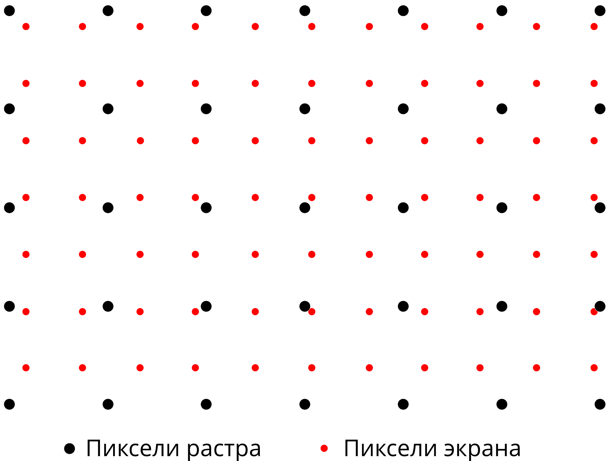
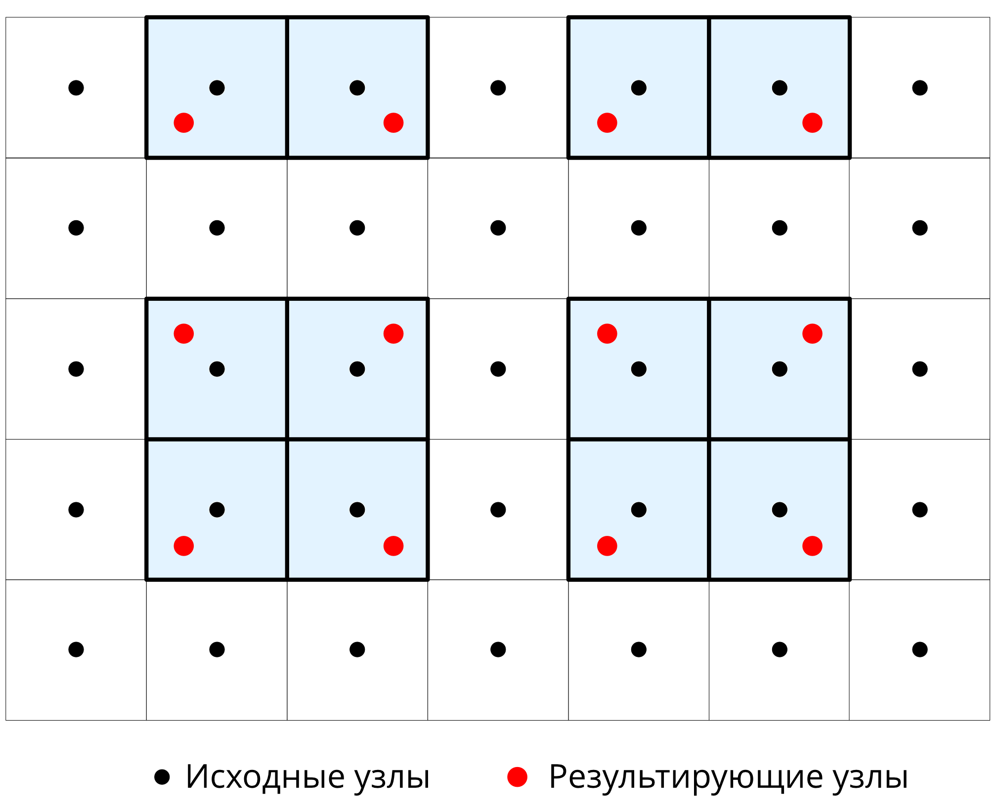
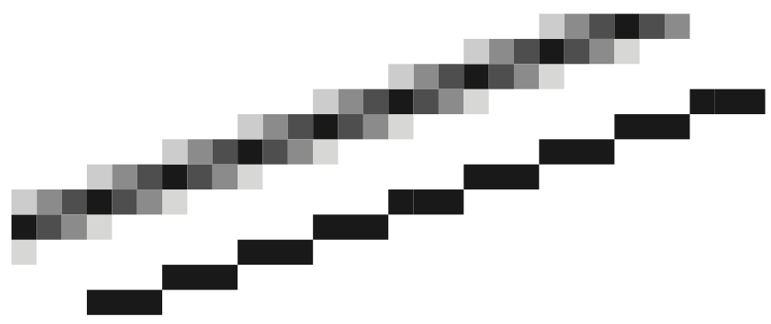

Основы компьютерной графики
Визуализация пространственных данных
Самсонов Тимофей Евгеньевич
8 февраля 2024 г.
Компьютерная графика
Наука и искусство визуальной коммуникации посредством компьютерного дисплея и инструментом интерактивного взаимодействия с ним.
- Визуальный аспект: компьютер → человек
- Интерактивный аспект: человек → компьютер

Связь с компьютерным зрением
Компьютерная графика: реализация с определенного ракурса внешнего вида сцены, в которую погружены модели объектов под заданными условиями освещения.
Компьютерное зрение: определение параметров сцены и погруженных в нее объектов при заданных допущениях.

Аффинные преобразования
Аффинное преобразование \(f\colon\mathbb{R}^{n}\to \mathbb{R}^{n}\) есть преобразование вида:
\[
f(\mathrm p) = \mathbf M \cdot \mathrm p + \mathrm v
\]
где \(\mathbf M\) — обратимая матрица (квадратная матрица, определитель которой отличен от нуля) и \(v\in \mathbb{R}^{n}\).
\(\mathbf M\) и \(\mathrm v\) обычно объединяются в одну матрицу \(\mathbf A\), что требует представления \(p\) в однородных координатах: \(\widehat{\mathrm p} = (x_p, y_p,..., 1)\). В этом случае аффинное преобразование можно записать как:
\[
f(\mathrm p) = \mathbf A \cdot \widehat{\mathrm p} = \left[ \begin{array}{ccc|c} \, & \mathbf M & & \mathrm v \ \\ 0 & \ldots & 0 & 1 \end{array} \right] \begin{bmatrix} \mathrm p \\ 1 \end{bmatrix}
\]
Аффинные преобразования
Сдвиг на вектор трансляции \(t = (t_x, t_y)\):
\[
\begin{bmatrix} x' \\ y' \\ 1 \end{bmatrix} = \underbrace{\begin{bmatrix} 1 & 0 & t_x \\ 0 & 1 & t_y \\ 0 & 0 & 1 \end{bmatrix}}_{\mathbf T(t_x, t_y)} \begin{bmatrix} x \\ y \\ 1 \end{bmatrix} = \begin{bmatrix} 1x + 0y + t_x1 \\ 0x + 1y + t_y1 \\ 0x + 0y + 1 \end{bmatrix} = \begin{bmatrix} x + t_x \\ y + t_y \\ 1 \end{bmatrix},
\]
Поворот на угол \(\theta\):
\[
\begin{bmatrix} x' \\ y' \\ 0 \end{bmatrix} = \underbrace{\begin{bmatrix} \cos \theta & -\sin \theta & 0 \\ \sin \theta & \cos \theta & 0 \\ 0 & 0 & 1 \end{bmatrix}}_{\mathbf R(\theta)} \begin{bmatrix} x \\ y \\ 1 \end{bmatrix} = \begin{bmatrix} x \cos \theta - y \sin \theta \\ x \sin \theta + y \cos \theta \\ 1 \end{bmatrix},
\]
Аффинные преобразования
Масштабирование с коэффициентами \(s_x, s_y\):
\[
\begin{bmatrix} x' \\ y' \\ 1 \end{bmatrix} = \underbrace{\begin{bmatrix} s_x & 0 & 0 \\ 0 & s_y & 0 \\ 0 & 0 & 1 \end{bmatrix}}_{\mathbf S(s_x, s_y)} \begin{bmatrix} x \\ y \\ 1 \end{bmatrix} = \begin{bmatrix} x s_x \\ y s_y \\ 1 \end{bmatrix},
\]
- при навигации по карте \(s_x = s_y = a\)
- для зеркального отражения по соответствующим осям \(s_x\) или \(s_y\) будут иметь отрицательные значения.
Стандартные сценарии
При загрузке слоя данных в пустой проект объекты вписываются в порт просмотра.
Пусть ограничивающий прямоугольник (экстент) данных имеет размеры \([x_0, y_0]\times[x_1, y_1]\), а размер порта просмотра \([0, di]\times[0, dj]\). Тогде необходимо выполнить следующие преобразования:
Совместить начало координат с центром экстента данных — точкой \([(x_1 + x_0)/2, (y_1 + y_0)/2]\).
На оcнове сравнения пропорций экстента \(\frac{dy}{dx}\) и порта просмотра \(\frac{di}{dj}\) выбрать коэффициент масштабирования \(s\):
\[s = \begin{cases}
\frac{dj}{dx},~\texttt{если}~\frac{dy}{dx} \leq \frac{di}{dj}\\
\frac{di}{dy},~\texttt{если}~\frac{dy}{dx} > \frac{di}{dj}\\
\end{cases}\]
Стандартные сценарии
Отмасштабировать координаты на полученный коэффициент \(s\).
Переместить отмасштабированное изображение в точку \((di/2, dj/2)\).
Итоговая матрица преобразования \(\textbf{A}\) будет выглядеть следующим образом:
\[\textbf A = \textbf T(di/2, dj/2)~\textbf S(s)~\textbf T(-(x_1 + x_0)/2, -(y_1 + y_0)/2)\]
Точки исходных объектов \(p\) будут трансформированы в точки внутри порта просмотра \(p'\) как:
\[p' = \textbf A p\]
Стандартные сценарии
Пусть текущая матрица отображения равна \(A\). Пользователь:
- перетащил изображение из точки \((i_1, j_1)\) в точку \((i_2, j_2)\):
\[\mathbf A = \mathbf T(i_2-i_1, j_2 - j_1)\mathbf A\]
- в точке \((i, j)\) прокрутил колесико мыши на \(k > 0\) оборота:
\[\mathbf A = \mathbf T(i, j)~\mathbf S(ks, ks)~\mathbf T(-i, -j)~\mathbf A\]
- в точке \((i, j)\) прокрутил колесико мыши на \(k < 0\) оборота:
\[\mathbf A = \mathbf T(i, j)~\mathbf S(-\frac{1}{ks}, -\frac{1}{ks})~\mathbf T(-i, -j)~\mathbf A\]
Каждый оборот соответствует изменению масштаба в \(s\) раз.
Отсечение отрезков
Один из самых широко используемых — алгоритм Коэна-Сазерленда, в котором используется разбиение плоскости на 9 частей прямыми, координаты которых определяются границами прямоугольника (в частности — порта просмотра):
INSIDE = 0 — \(0000\)LEFT = 1 — \(0001\)RIGHT = 2 — \(0010\)BOTTOM = 4 — \(0100\)TOP = 8 — \(1000\)
Отрезки, обе точки которых находятся по одну сторону от прямоугольника, имеют совпадающий единичный бит в одной и той же позиции
Вычисление кодов Коэна-Сазерленда
Пусть дана точка \((i, j)\), а также границы порта просмотра \((i_{min}, i_{max})\), \((j_{min}, j_{max})\).
Тогда код вычисляется следующим образом:
def code(i, j, imax, jmax):
code = INSIDE
if j < jmin:
code |= LEFT
elif j > jmax:
code |= RIGHT
if i < imin:
code |= TOP
elif i > imax:
code |= BOTTOM
return code
В данном случае применяется операция логическое ИЛИ, которая устанавливает в каждый бит \(1\), если хотя бы у одного из операндов соответствующий бит равен \(1\).
Алгоритм Коэна-Сазерленда
Для каждого отрезка \((i_0, j_0), (i_1, j_1)\) выполняется бесконечный цикл, внутри которого ведутся следующие действия:
Вычисляются коды code0 и code1 для концов отрезка.
Если оба конца находятся внутри порта просмотра (code0 | code1 == 0), то отрезок принимается целиком и цикл прерывается.
Если оба конца находятся по одну сторону от порта просмотра (code0 & code1 != 0), то отрезок отклоняется целиком и цикл прерывается.
В противном случае (оба конца находятся по разные стороны от порта просмотра), выполняются следующие действия:
- Выбирается любая точка, находящаяся за пределами порта просмотра.
- Выполняется пересечение отрезка с прямой, определяющей ту сторону, в которой находится выбранная точка.
- Выбранная точка заменяется на найденное пересечение.
Отрисовка объектов
- Выполняется после отсечения
- Две основных операции: обводка и заливка
- В случае точечных данных применяются не к самой точке, а используемой для ее отображения фигуре.
Общий алгоритм для обводки:
- Установить тип отображаемого объекта
- Организовать обход по всем уровням вложенности с помощью цикла
- На самом низком уровне вложенности получить матрицу координат.
- Последовательно соединяя соседние координаты в матрице, отрисовать границу отрезками.
Отрисовка отрезков
Алгоритм Брезенхема (Bresenham 1965)
draw_line(i0, j0, i1, j1, image, color)

Алгоритм Брезенхэма
Cистема экранных координат \(ij\), где \(i\) — строка (увеличивается сверху вниз), \(j\) — столбец (увеличивается слева направо),
- \((i_0, j_0)\) — начальная точка отрезка в экранных координатах
- \((i_1, j_1)\) — конечная точка отрезка в экранных координатах
Уравнение отрезка: \[\frac{i - i_0}{i_1-i_0} = \frac{j - j_0}{j_1-j_0}\]
Выразив \(i\), получаем: \[i = \color{red}{\underbrace{\frac{i_1 - i_0}{j_1-j_0}}_{\textbf{d (уклон)}}} (j - j_0) + i_0\]
Отрисовка отрезков
Стандартно рассматривается отрисовка линии, которая располагается в секторе В-ЮВ, т.е. идет относительно начальной точки вправо и полого вниз при соблюдении следующих условий:
- \(j_0 \geq 0,~i_0 \geq 0\);
- \(j_0 < j_1,~i_0 \leq i_1\);
- \(j_1 - j_0 \geq i_1 - i_0\).
Алгоритм Брезенхэма
Для сектора В-ЮВ алгоритм опирается на координаты \(x\):
Вычисляем заранее:
- \(dj = j_1 - j_0\).
- \(di = i_1 - i_0\).
- \(\color{blue}{d = di / dj}\);
- \(\color{blue}{i = i_0}\);
- \(e = 0\)
Для \(\color{blue}{j = j_0, ... j_1}\), выполняем:
- Рисуем пиксель \((i, j)\).
- Обновляем ошибку \(e = e + |d|\).
- Если \(e \geq 0.5\), то:
- \(\color{blue}{i = i + \texttt{sign}(di)}\),
- \(e = e - 1\).
Использование функции \(\texttt{sign}\) позволяет применять алгоритм также и для сектора В-СВ (только \(i\) будет уменьшаться).
Обозначим случай draw_line_byJ(i0, j0, i1, j1, image, color)
Алгоритм Брезенхэма
Альтернативно рассматривается отрисовка линии, которая располагается в секторе Ю-ЮВ, т.е. идет относительно начальной точки вправо и круто вниз при соблюдении следующих условий:
- \(j_0 \geq 0,~i_0 \geq 0\);
- \(j_0 \leq j_1,~i_0 < i_1\);
- \(j_1 - j_0 < i_1 - i_0\).
Алгоритм Брезенхэма
Для сектора Ю-ЮВ алгоритм опирается на координаты \(i\):
Вычисляем заранее:
- \(dj = j_1 - j_0\).
- \(di = i_1 - i_0\).
- \(\color{red}{d = dj / di}\);
- \(\color{red}{j = j_0}\);
- \(e = 0\)
Для \(\color{red}{i = i_0, ... i_1}\) выполняем:
- Рисуем пиксель \((i, j)\).
- Обновляем ошибку \(e = e + |d|\).
- Если \(e \geq 0.5\), то:
- \(\color{red}{j = j + \texttt{sign}(dj)}\),
- \(e = e - 1\).
Использование функции \(\texttt{sign}\) позволяет применять алгоритм также и для сектора Ю-ЮЗ (только \(j\) будет уменьшаться).
Обозначим случай draw_line_byI(i0, j0, i1, j1, image, color)
Алгоритм Брезенхэма
Для оставшихся направлений построение линий реализуется путем перестановки местами начальной и конечной точки. Код результирующей функции на Python:
def draw_line(i0, j0, i1, j1, image, color):
if abs(i1 - i0) < abs(j1 - j0): # пологая линия
if j0 > j1:
draw_line_byJ(i1, j1, i0, j0, image, color)
else:
draw_line_byJ(i0, j0, i1, j1, image, color)
else:
if i0 > i1: # крутая линия
draw_line_byI(i1, j1, i0, j0, image, color)
else:
draw_line_byI(i0, j0, i1, j1, image, color)
где abs() — функция вычисления модуля.
Алгоритм сканирующей линии
Для каждого \(i_k = i_{min},...,i_{max}\) получить упорядоченное по возрастанию множество \(J = \{j_0, j_1, ..., j_{n-1}\}\) столбцов пересечений с исходными линиями:
- Для каждой линии \(l_m, m = 0,...,N-1\):
- вычислить флаг пересечения \(f: i^m_0 > i_k \neq i^m_1 > i_k\);
- если \(f = \texttt{TRUE}\), то
- вычислить \(j^m = j^m_0 + (j^m_1 - j^m_0)\frac{i_k - i^m_0}{i^m_1 - i^m_0}\);
- добавить \(j^m\) в множество \(J\).
- Если \(J\) не пусто, то упорядочить его по возрастанию и выполнить закрашивание между его элементами в порядке:
\[\lceil j_0 \rceil \to \lfloor j_1 \rfloor,~\lceil j_2 \rceil \to \lfloor j_3 \rfloor,~...~,~\lceil j_{n-2} \rceil \to \lfloor j_{n-1} \rfloor\]
Передискретизация (resampling)
Передискретизация — изменение частоты дискретизации. Нужна при визуали-зации растров, если размер ячейки не соответствует размеру пикселя монитора.
Исходное изображение
Передискретизация (resampling)
Передискретизация — изменение частоты дискретизации. Нужна при визуали-зации растров, если размер ячейки не соответствует размеру пикселя монитора.
Ближайший сосед (укрупнение пикселя)
Передискретизация (resampling)
Передискретизация — изменение частоты дискретизации. Нужна при визуали-зации растров, если размер ячейки не соответствует размеру пикселя монитора.
Билинейная интерполяция (уменьшение пикселя)
Передискретизация (resampling)
Передискретизация необходима при визуализации растрового изображения на растровом экране. Как правило, разрешение этих растров не совпадает.

Метод ближайшего соседа
Используется значение ближайшего пикселя:

Метод билинейной интерполяции
Восстанавливается поверхность в ячейке из 4 узлов:
Метод билинейной интерполяции
Коэффициенты определяются по 4 точкам:
\[\begin{cases}
a_{00} = f_{00},\\
a_{10} = f_{10} - f_{00},\\
a_{01} = f_{01} - f_{00},\\
a_{01} = f_{00} + f_{11} - f_{10} - f_{01}.
\end{cases}\]
\[f(x, y) = a_{00} + a_{10}x + a_{01}y + a_{11}xy\]
Координаты \(x\) и \(y\) меняются в диапазоне от \(0\) до \(1\) в пределах ячейки.
Метод бикубической интерполяции
Восстанавливается поверхность в 9 ячейках, окружающих узел:
Метод бикубической интерполяции
Коэффициенты определяются по 16 точкам:
\[\begin{cases}
f(0,0) = a_{00},\\
f(1,0) = a_{00} + a_{10} + a_{20} + a_{30},\\
f(0,1) = a_{00} + a_{01} + a_{02} + a_{03},\\
f(1,1) = \sum_{i=0}^3 \sum_{j=0}^3 a_{ij},\\
\dots
\end{cases}\]
\[f(x, y) = \sum_{i=0}^3 \sum_{j=0}^3 a_{ij} x^i y^j\]
Координаты \(x\) и \(y\) меняются в диапазоне от \(0\) до \(1\) в пределах окрестности \(3 \times 3\) ячеек.
Сглаживание (antialiasing)
При крупном размере пиксела выводящего устройства ступенчатость линий и границ полигонов становится заметной.
Для устранения эффекта ступенчатости используется сглаживание (antialiasing).

Сглаживание (antialiasing)

Суперсемплинг (antialiasing)
Пусть результирующее растровое изображение \(R\) имеет размеры \(m \times n\).
- Создается буферное изображение \(R_b\) размером \(km \times kn\), где \(k \in \mathbb{N^*}\) — коэффициент сглаживания (положительное натуральное число).
- Объекты отрисовываются в \(R_b\).
- Производится передискретизация \(R_b \to R\) с использованием блочной фильтрации (box filter). Значение результирующего пиксела \(R[i, j]\) равняется среднему арифметическому значений \(R_b\), попадающих в его пределы:
\[R[i, j] = \sum_{l = 1}^L s(R_b) / L,\]
где \(s(R_b)\) — выборочное значение (сэмпл), взятое с \(R_b\), \(L\) — количество сэмплов
Суперсемплинг (antialiasing)